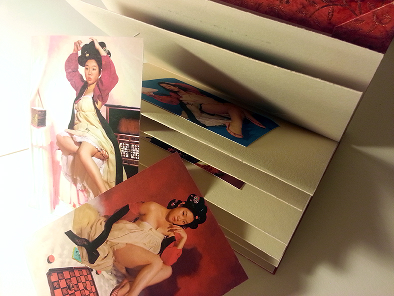
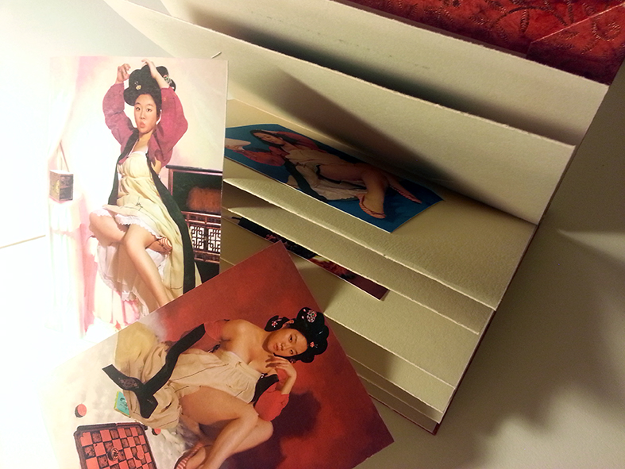
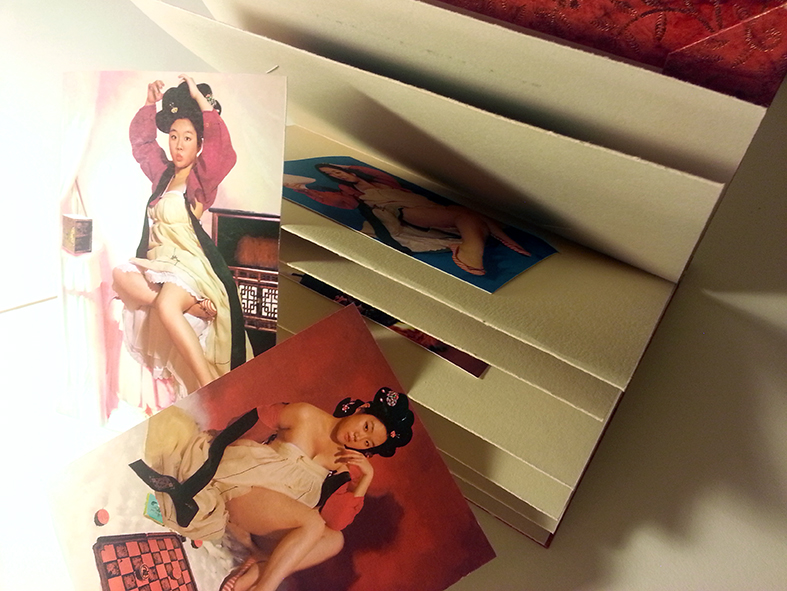

For this Monograph project, I was inspired by Pin-up Girls painted by Gil Elvgren in the 40's through the 60's.
I've been collecting images of Elvgren Pin-ups since the summer of 2012. I was attracted to his ways of showing female beauties (which often are idealized and exaggerated in unrealistic ways) in an aesthetically pleasing way, instead of making them look profligate.
I had around 50 images when I started this project. As I researched more about history of pin-ups, I ended up having more than 300 images of Elvgren paintings. Then I categorized those images into several categories and sub-categories. Among those 300 images, I chose my 12 favorites to work with.
I have always wondered why there is no such pin-up culture in Korea. And after the research, it is clear that white girls with blonde hair dominate in Elvgren's paintings. So I started this project with this question: How would Korean pin-up culture be presented if there is one?
I did photo-shoots of myself dressing in Korean traditional outfits and posing like Elvgren's pin-up paintings. ( The photo-shoot process was PAINFUL. Ugh. ) After taking photos, I used Photoshop to add traditional hair style and alter the colors of my only outfit.
I wanted to make a book featuring these photos of Korean pin-up girls because it was the best way of communication of that time period. And I chose the color red for the cover because it has a connotation of being sensual and rated-R in Korea. The book is made to be viewed from right to left because that was the way how most Asian countries adopted for reading books. And since the purpose of pin-up is to take one's favorite photograph and "pin" it up on the wall or other surfaces, I made the images of pin-up girls detachable, making them available for pin-ups.
